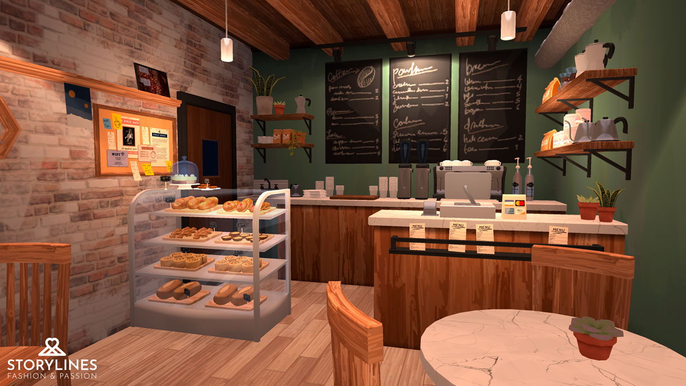
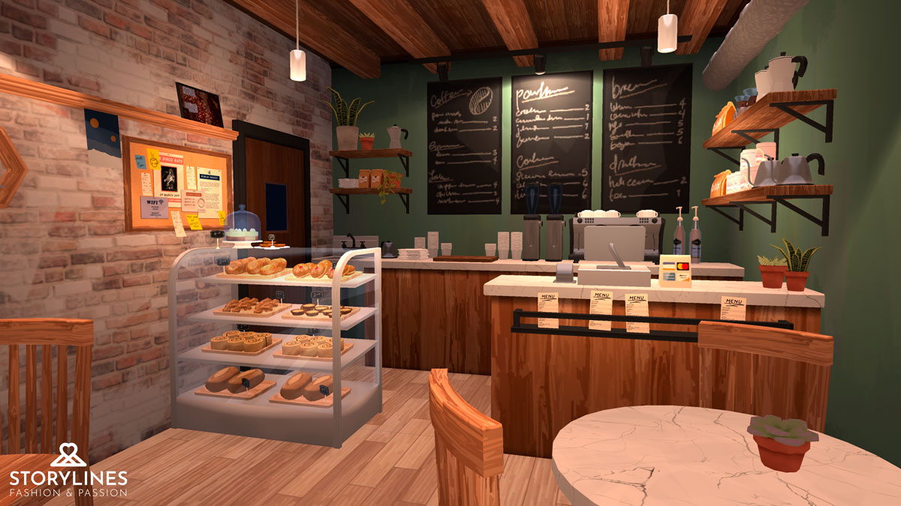

Storylines: Passion and Fashion
Tangent Interactive Media
Mobile
2021 - 2022
Storylines: Passion & Fashion is a free-to-play romance narrative-based mobile game. My role in the project is the Technical Artist, and my responsibilites include creating and assembling environments, laying out the stories using an in-house narrative layout tool, and creating a variety of clothing assets. I also occasionally programming work on the custom Unity editor tools, implementing features that are needed but not high enough priority for the main developers.
I modelled and textured a library of modular environment assets, allowing us to quickly create new sets that will be needed for upcoming stories. Referencing concepts created by the art director, I created over 40 interior and exterior sets, such as a relaxing tropical beach, an intimate cafe, and a grand casino. I also used the Unity Animator to animate environment props when required, such as strobe lights and lasers in a nightclub, or subtle waves on the beach shore.


 



I developed and maintained the shaders used in environment assets, such as the general environment shader, glass, and water. The environments use a flexible and lightweight lighting solution, allowing us to create multiple custom lighting schemes per set to express a variety of moods in the stories.

I completed the narrative layout on multiple books, keeping up with a weekly release schedule of new chapters. Referencing the scripts written by the narrative designers, I used the custom in-house tool to implement the stories in Unity. I would design the characters and love-interests, position them in the scene, selection the animations, and decide on the composition of the shots. Doing the narrative layout also involved keeping track of branching narratives with variables, integrating the special rewards, and implementing music and sound effects.

When there was downtime between creating new sets or doing narrative layout, I would also provide support to the 3D character artist to help fill out our catalog of clothing. I modelled, textured, and rigged a variety of character assets such as hats, shoes, t-shirts, and hairstyles.

I also created multiple types of shoes, where I used slight variations in the silhouette and color to quickly create new shoe assets to fit a variety of styles and situations.